홈페이지 · 5페이지
your wings — 기획부터 배포까지 자체 제작
레퍼런스
아래는 전부 your wings가 직접 기획하고 만든 결과물입니다. 가상 브랜드 세 개를 세우고 홈페이지와 상세페이지를 통째로 만들었습니다. 실제 의뢰도 같은 방식으로 진행합니다.
로고는 그림 한 장이 아니라 규칙입니다. 그래서 브랜드마다 보여줘야 할 것이 다릅니다 — 누암은 도면, 오독은 붙어 있는 모습, 뽀득은 얼마나 작아져도 읽히는가, 민탭은 색 하나. 네 판을 같은 틀에 넣지 않은 이유입니다.
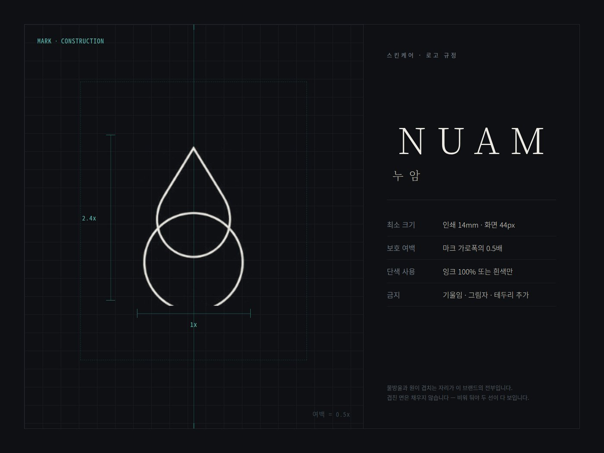
로고 규정 · 도면
누암 NUAM — 스킨케어
물방울과 원이 겹치는 단선 마크를 격자 위에 올려 비율(2.4x · 1x)과 보호 여백을 고정했습니다. 팔레트 대신 금지 규칙을 적었습니다.
가상 브랜드 콘셉트
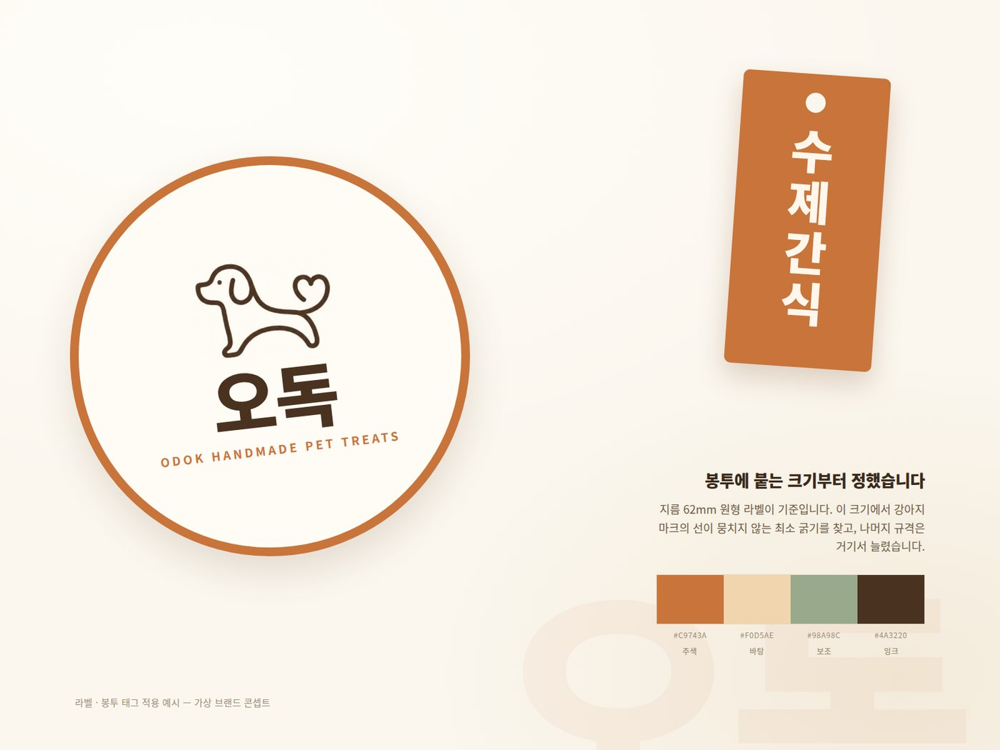
로고 적용 · 라벨
오독 — 반려동물 수제간식
규격표가 아니라 실제로 붙는 모습입니다. 지름 62mm 원형 라벨에서 강아지 마크의 선이 뭉치지 않는 굵기를 먼저 찾고 나머지를 거기서 늘렸습니다.
가상 브랜드 콘셉트
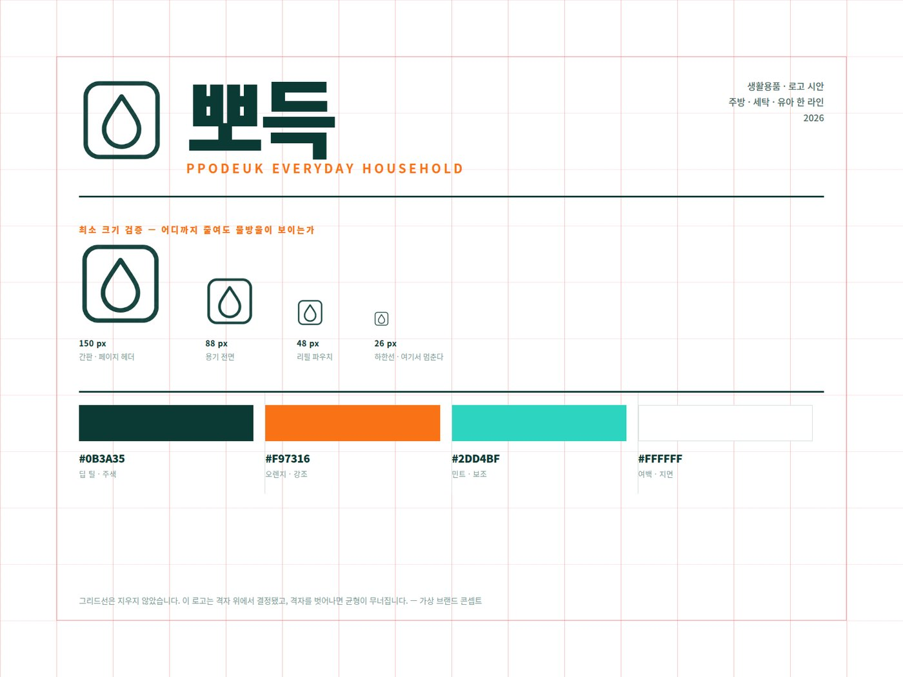
로고 검증 · 최소 크기
뽀득 — 생활용품
150 · 88 · 48 · 26px로 줄여 가며 물방울이 언제까지 보이는지 확인했습니다. 결정에 쓴 격자선을 지우지 않고 그대로 뒀습니다.
가상 브랜드 콘셉트
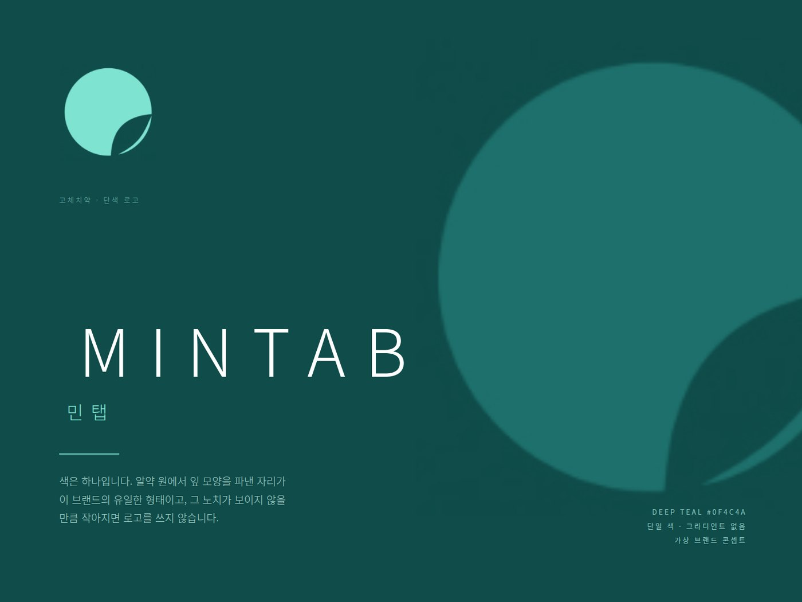
로고 · 단색 운용
민탭 MINTAB — 고체치약
팔레트를 만들지 않았습니다. 딥 티일 한 색과 알약 원에서 파낸 잎 노치, 그 둘로 끝냅니다. 노치가 안 보일 만큼 작아지면 로고를 쓰지 않습니다.
가상 브랜드 콘셉트
인스타그램 캐러셀 규격(1080×1350)입니다. 옆으로 밀어서 보세요. 글자가 들어가는 작업은 AI 이미지 생성으로 만들지 않고 직접 조판합니다 — 그래야 한글이 깨지지 않고, 수치나 문구를 나중에 고칠 수 있습니다.
원료 이력과 급여량을 정보형으로 정리했습니다. 크림 지면에 사진을 위, 글을 아래로 받쳤습니다.
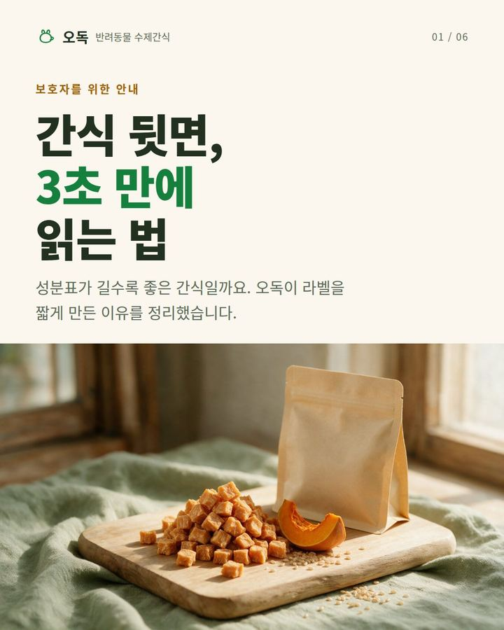
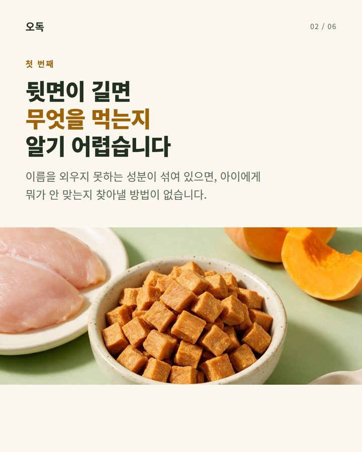
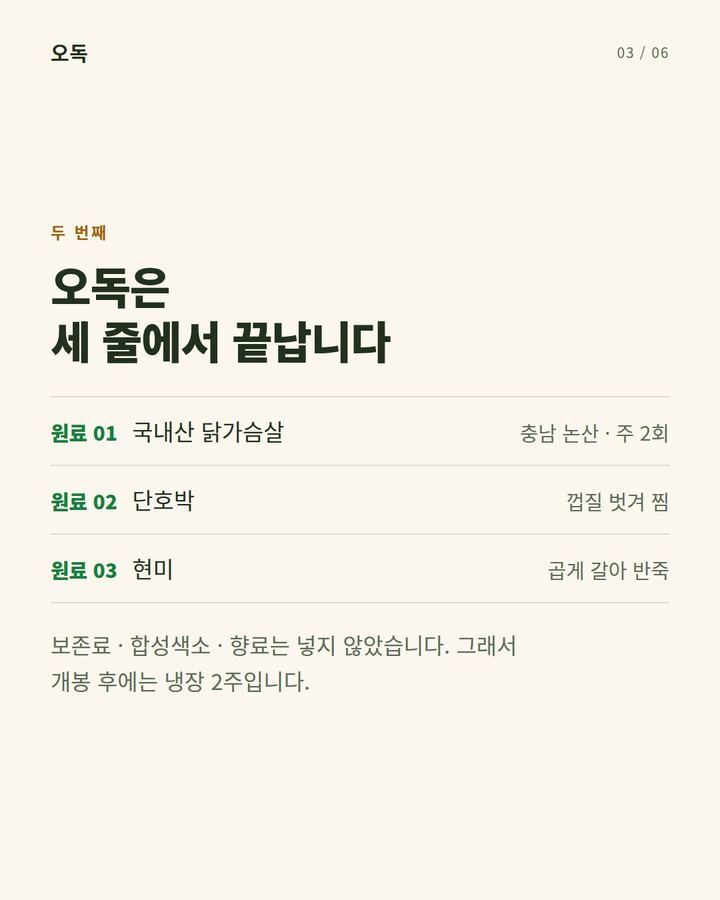
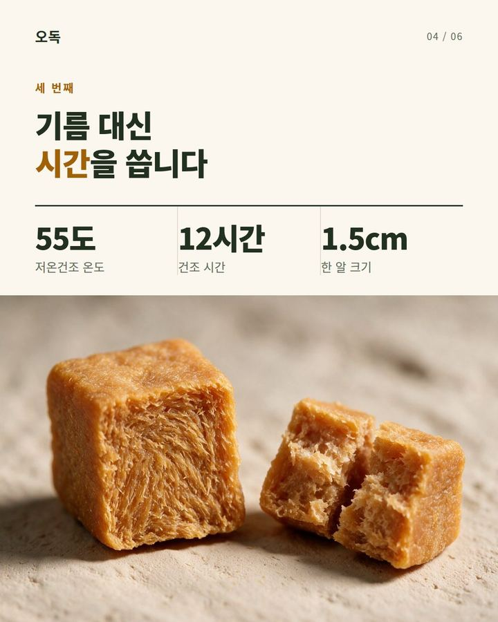
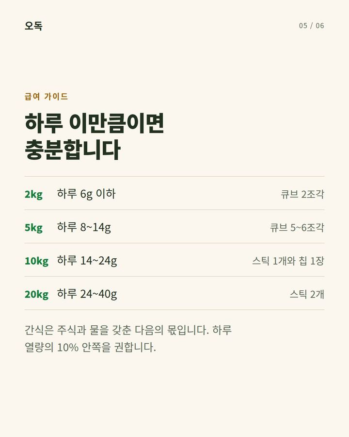
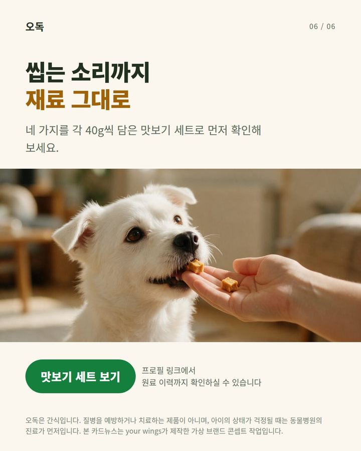
문제·방법·결과 3단계로 끊었습니다. 짙은 틸 지면에 큰 숫자를 왼쪽에 세운 스위스 그리드입니다.
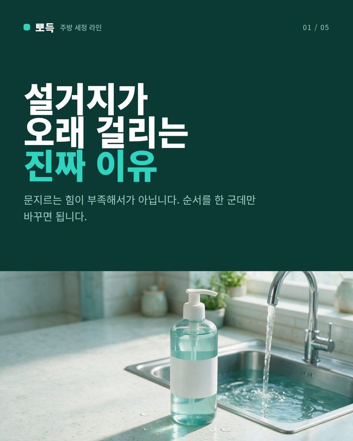
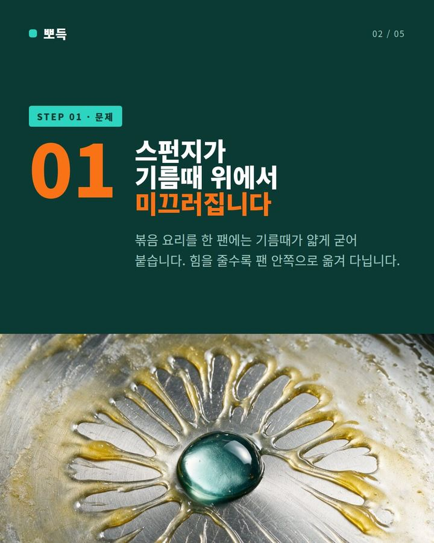
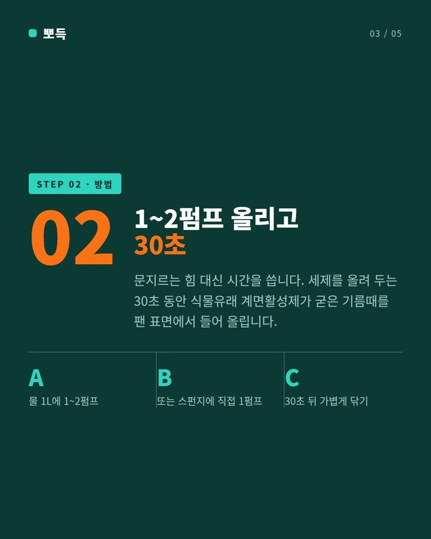
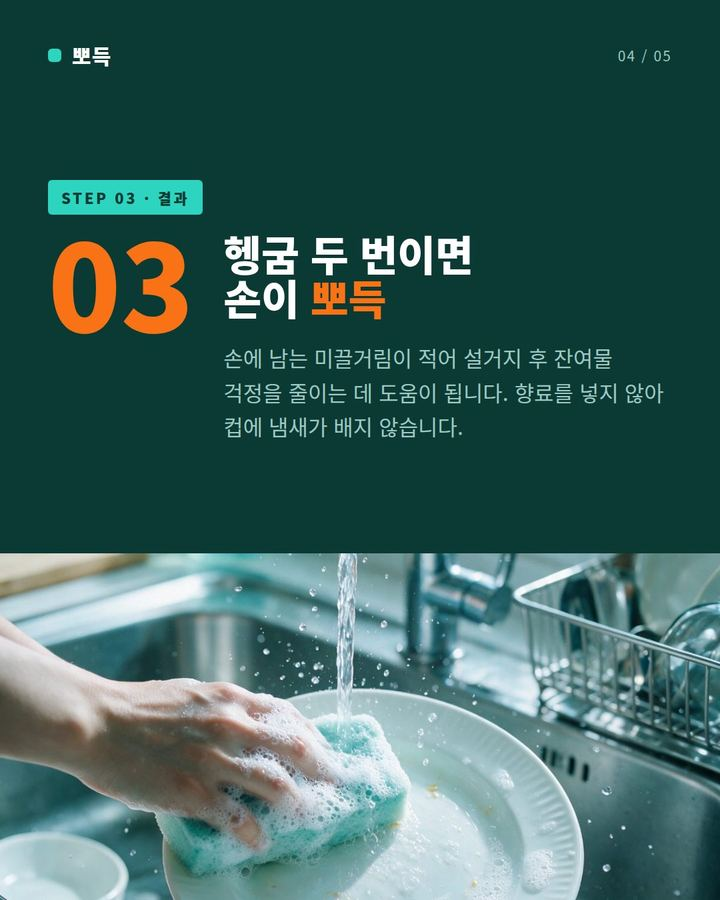
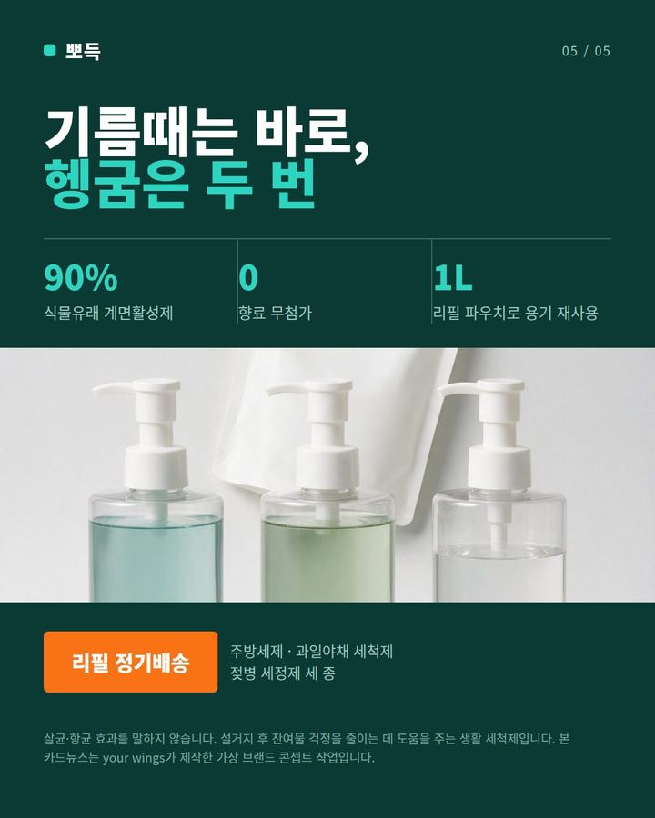
제품이 직접 말하는 애니메이션과 동물 캐릭터 숏폼입니다. 소리를 켜면 대사가 들립니다. 한 번에 하나만 재생됩니다.
제품 컷을 첫 프레임으로 써서 이어 붙인 실사 광고입니다. 모델 섭외도 촬영 스튜디오도 쓰지 않았습니다.
실사 광고 · 10초
누암 배리어 세럼 — “저녁 세 단계를 한 겹으로 줄였습니다”
가상 브랜드 콘셉트
실사 광고 · 10초
누암 배리어 크림 — “마지막 한 겹으로 수분이 날아가는 속도를 늦춥니다”
가상 브랜드 콘셉트
실사 광고 · 10초
뽀득 주방세제 — “기름때는 바로, 헹굼은 두 번”
가상 브랜드 콘셉트
실사 광고 · 10초
오독 닭가슴살 큐브 — “원료는 세 가지, 그게 전부입니다”
가상 브랜드 콘셉트
사물 애니메이션 · 10초
주방세제 — “한 번만 눌러도 기름때가 바로 지워집니다”
가상 브랜드 콘셉트
사물 애니메이션 · 10초
선크림 — “백탁 없이 그대로 스며듭니다”
가상 브랜드 콘셉트
사물 애니메이션 · 10초
립밤 — “한 번 바르면 저녁까지 갑니다”
가상 브랜드 콘셉트
사물 애니메이션 · 10초
고체치약 — “하나만 씹으면 양치 끝입니다”
가상 브랜드 콘셉트
사물 애니메이션 · 10초
섬유유연제 — “사흘이 지나도 향이 그대로예요”
가상 브랜드 콘셉트
동물 캐릭터 · 10초
강아지 — “읽기 어려운 이름은 하나도 없어요”
가상 브랜드 콘셉트
동물 캐릭터 · 10초
고양이 — “저희는 원래 아무거나 안 먹거든요”
가상 브랜드 콘셉트
브금 없이 먹는 소리와 짧은 대사만 남깁니다. 자체 AI 모델을 써서 모델 섭외 없이 만듭니다.
ASMR 먹방 · 15초
양념치킨 — “이거 이번에 새로 나온 건데 진짜 맛있대요”
ASMR 먹방 · 15초
마라탕 — “진짜 매운데 계속 땡기는 맛이에요”
ASMR 먹방 · 15초
생크림 케이크 — “한 조각으로는 안 되겠는데요”
쇼릴
your wings — 제작 영상 모음